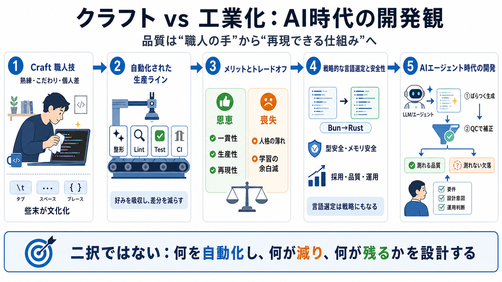

Craftクラフト／職人技
品質は個々人の熟練で決まる、という信念。

ソフトウェア開発は「職人の技」から「反復できる生産」に傾いている。Bun→Rust移行やAI時代の品質と労働構造まで、その流れを一本の線で読む。
良いソフトウェアは、職人の手作業で磨かれるのか。それとも、自動化された反復プロセスで量産されるのか。
品質は個々人の熟練で決まる、という信念。
品質は標準・自動化で揃え、再現性で勝つ。
タブ/スペース論争やbraces論争は「見た目の好み」ではなく、職人性を象徴する文化になる。
“自分らしさ”がコードに投影される。
熟練・こだわりの度合いが読み手に伝わる。
議論が繰り返され、注意資源を奪う。
フォーマッタ・リント・テスト・CIが整うほど、個人の裁量は縮み、作業は“生産手順”に変わる。
好みを吸収し、差分を減らす。
テスト/CIが合否を定義し、運用を標準化する。
正規化は注意資源を本題へ戻す一方で、編集の“個人のつながり”や実験性を削る。
整形・検証が自動化され、生産性と一貫性が上がる。
コードの人格が薄れ、学習や試行の“余白”が減る。
2026年の「BunがZigからRustへ移行する」騒動は、言語選定が企業の戦略と結びつくことを象徴する。
採用・品質・運用の都合が、コミュニティの対立を超えて選定に影響する。
標準化と自動化が進むほど、個人の好みは“吸収”されやすい。
型安全性・メモリ安全は事故を減らすが、「面倒さ」への心理的抵抗や、deskilling/intensificationと絡む。
不具合を未然に抑える方向に働く。
学習・制約が増えると反発が起きる。
熟練を薄め、より安い労働で処理を増やす流れと接続する。
LLM/エージェントでスロップ（低品質）出力が増える可能性がある一方、フォーマッタやテストで最終的に整う。
自動生成が増え、品質のばらつきが出うる。
品質管理が補正し、平均値を押し上げる。
品質担保が“職人の手”から“機械の仕組み”へ移る方向に進む、という予測である。
テスト・静的解析・整形が役割を引き継ぐ。
エージェントが賢く速く安くなり、自動化が進む。
企業は“品質確保の名目”でさらに自動化を増やす。
「良い品質」を完全に客観化して測れない以上、自動化が測れる部分へ最適化を寄せるリスクが残る。
指標に最適化され、改善が見えやすい。
設計意図や運用判断などが犠牲になりうる。
労働構造の一般化や、品質指標がどこまで保証するかは別途吟味が必要で、要件・アーキテクチャ・運用判断は人間が残りやすい。
deskilling/intensificationの検証はデータが十分でない。
主観を含むため、指標設計の失敗モードに注意。
要件・運用・安全評価など、人間判断は再分配される。
職人か工場かの二択ではなく、ツールが人間の役割をどう変えるかを考える材料にするのが安全だ。
何を自動化し、何が減り、何が“測れないまま”残るか。
品質指標・運用設計・失敗時の挙動まで含めて評価する。
No references found